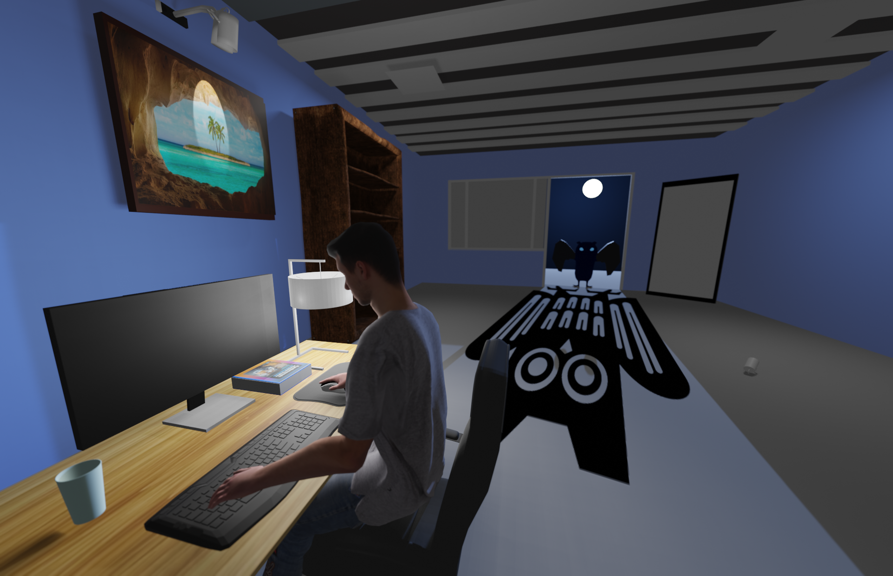
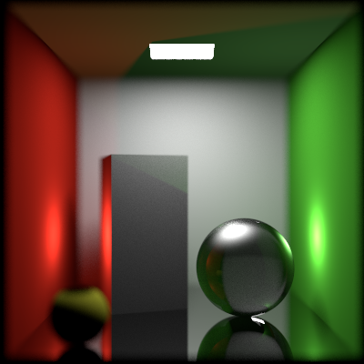
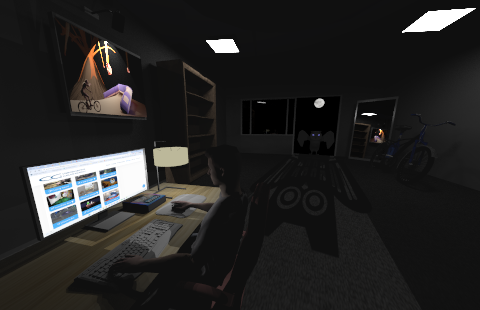
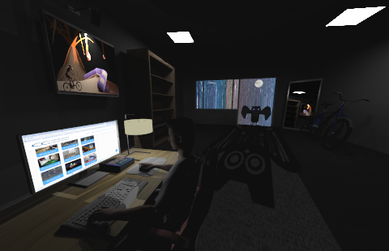

We originally had 3 different ideas for the Rendering Competiton. We developed two of them to some extent
and instead of dropping one, we decided to combine them in some capacity.
The very first scene we thought of has been included as the painting
on the left wall (image from Blender Renderer). This scene, which we would have called "Calypso Beats", had several interesting elements, like a biker, an erupting volcano,
a train falling off its track - all of this amidst a meteor shower. However, it became quite challenging to incorporate this into our ray tracer,
especially with particle effects and the lighting of an outdoor scene in general.
In the second scene, we thought of rendering a group of glass Utah teapots
filled with water, inside a bird's nest, where the "mother" teapot would be feeding its young with glowing water. This would have complex reflection and refraction interactions with proper lighting.
For our third scene, we wanted to potray a student preparing for the Rendering Competition with exams around the corner. The UdS owl lurking in the background symbolizes
the impending danger of exams.
The final scene here pays a homage to our previous idea while best representing the features of our ray tracer. With different mirror and glass materials and strategic placement of multiple light sources, we were
able to simulate complex light-material interactions throughout the room.
For those wondering, the scene title is a wordplay on the 1994 Romcom "Four Weddings and a Funeral" starring Hugh Grant and Andie MacDowell.

Building the Scene
This is how our initial model file looked in Blender.
We incorporated a depth of field camera for our scene and we find that this gives a more realistic look.
It blurs out parts of the scene in the background and periphery like the walls, painting, bookshelf, mirror etc. Nearly every other element in the scene is in focus. The parameters have been adjusted to make sure the effect is not excessive.
While we incorporated some models into our scene using .obj and .mtl files from Blender, we also
hand-sculpted quite a few other models like the owl wings, walls of the room, the desk, and the computer monitor. We also manipulated a pre-rigged armature to fit the man to our scene. You can check examples in the gallery here.
Mirror Reflections with the Perspective Camera

Mirror Implementation from the Assignment
We implemented the mirror (conductor) material so that upon placing it strategically in
the room, we can capture reflections of different objects in the scene. Additonally, we have implemented a glass material for the window using a
dielectric of eta 1.5. This creates complex refraction patters on the window from the night sky in the background.
For the moon light entering and dispersing through the room, we chose directional lights
with the direction vector pointed from a point on the moon surface to the back of the owl. Since, the light intensity here doesn't fall off by the inverse
of the squared distance, this acts as the major source of illumination for our scene. The owl shadow, cast by the moon light is a bit unrealistic, but
we wanted to artistically potray the growing examination pressure with an image map of the UdS logo on the floor carpet. We assigned the carpet a specific material to make sure the shadow from the moonlight has more contrast.
rt/lights/directional.h
rt/lights/directional.cpp

Without Environment Map

With Environment Map
An important feature for our scene is the environment map using an environment solid. Without it, the areas behind the owl and the window are completely
black and this reduces the contrast in the scene. With a trippy night sky background image mapped onto this solid, the scene isn't as empty as before and also we have better
contrast for the window, moon, owl etc.
We have used Bounding Volume Hierarchies to have a sufficiently fast ray-intersection routine compared to simplegroups.
Multithreading
We used multithreading in render.cpp and also in the ray intersection part of bvh.cpp using the OpenMP library. This has quite some impact on the
performance of the raytracer.
Ambient Light
We have used white ambient light (rt/lights/ambientlight.cpp) of a small intensity to give the scene a more realistic look.
We find that this is very helpful for a night scene where all parts of the room cannot be illuminated by placing point/spot/area/directional lights.
Coordinate Mappers
We use spherical coordinate mapper to map a realistic moon texture onto the moon and quadmapper (introduced in main/a_textures.cpp)
for mapping the "Calypso Beats" painting onto the picture frame.
Credits
We would like to thank Prof. Slusallek for this course and our tutors - Alexander Rath, Kevin Raj, and Amin Parchami,
for all their help throughout the semester. Goes without saying, but we would be completely lost with our ray tracer without their valuable inputs from time to time.